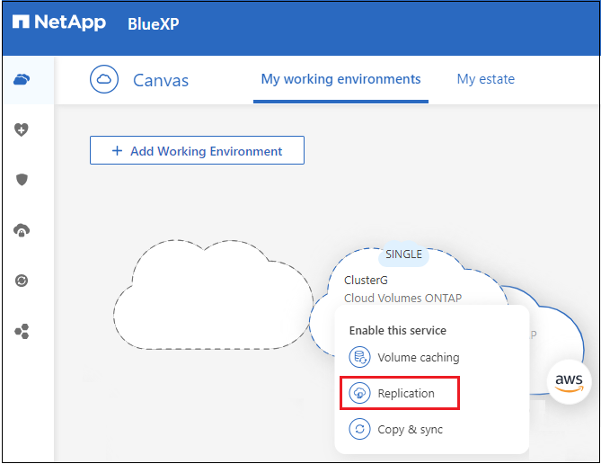

Notes de mise à jour
Notes de mise à jour
Configurez la solution de réplication des données
 Suggérer des modifications
Suggérer des modifications
Vous pouvez répliquer des données entre des environnements de travail ONTAP en choisissant une réplication unique des données pour le transfert de données, ou un programme récurrent pour la reprise après incident ou la conservation à long terme. Par exemple, vous pouvez configurer la réplication des données depuis un système ONTAP sur site vers Cloud Volumes ONTAP pour la reprise après incident.
Étape 1 : examen des exigences en matière de réplication des données
Avant de pouvoir répliquer des données, nous vous recommandons de vérifier que vos exigences spécifiques sont satisfaites pour Cloud Volumes ONTAP, les clusters ONTAP sur site ou Amazon FSX pour ONTAP.
- Environnements de travail
-
Si ce n’est déjà fait, vous devez créer les environnements de travail pour la source et la cible dans la relation de réplication des données.
- Exigences de version
-
Vérifiez que les volumes source et de destination exécutent des versions ONTAP compatibles avant de répliquer les données.
- Exigences spécifiques à Cloud Volumes ONTAP
-
-
Le groupe de sécurité de l’instance doit inclure les règles d’entrée et de sortie requises : plus précisément, les règles d’ICMP et les ports 11104 et 11105.
Ces règles sont incluses dans le groupe de sécurité prédéfini.
-
Pour répliquer des données entre deux systèmes Cloud Volumes ONTAP dans différents sous-réseaux, les sous-réseaux doivent être routés ensemble (paramètre par défaut).
-
Pour répliquer les données entre deux systèmes Cloud Volumes ONTAP de différents fournisseurs de cloud, vous devez disposer d’une connexion VPN entre les réseaux virtuels.
-
- Exigences spécifiques aux clusters ONTAP
-
-
Une licence SnapMirror active doit être installée.
-
Si le cluster se trouve sur votre site, vous devez disposer d’une connexion entre votre réseau d’entreprise et votre réseau virtuel dans le cloud. Il s’agit généralement d’une connexion VPN.
-
Les clusters ONTAP doivent répondre à des exigences supplémentaires en termes de sous-réseau, de port, de pare-feu et de cluster.
-
- Conditions spécifiques à Amazon FSX pour ONTAP
-
-
Si Cloud Volumes ONTAP fait partie de la relation, assurer la connectivité entre les VPC en activant le peering VPC ou en utilisant une passerelle de transit.
-
Si un cluster ONTAP sur site fait partie de la relation, assurez-vous que la connectivité entre votre réseau sur site et le VPC AWS s’effectue à l’aide d’une connexion Direct Connect ou VPN.
-
Étape 2 : réplication des données entre les systèmes
Vous pouvez répliquer vos données en choisissant une fonction de réplication unique des données, qui peut vous aider à les déplacer depuis et vers le cloud, ou encore à planifier des périodes récurrentes, ce qui peut vous aider dans la reprise d’activité ou la conservation à long terme.
-
Dans le menu de navigation, sélectionnez stockage > Canvas.
-
Dans le Canvas, sélectionnez l’environnement de travail qui contient le volume source, faites-le glisser vers l’environnement de travail auquel vous souhaitez répliquer le volume, puis sélectionnez Replication.

Les étapes restantes offrent un exemple de création d’une relation synchrone entre des clusters Cloud Volumes ONTAP ou ONTAP sur site.
-
Configuration de peering source et de destination : si cette page apparaît, sélectionnez toutes les LIFs intercluster pour la relation cluster peer.
Le réseau intercluster doit être configuré de sorte que les pairs de cluster disposent d’une connectivité « full-mesh » au niveau des paires, ce qui signifie que chaque paire de clusters d’une relation cluster peer-to-peer dispose d’une connectivité parmi l’ensemble de leurs LIFs intercluster.
Ces pages s’affichent si un cluster ONTAP disposant de plusieurs LIF est la source ou la destination.
-
Source Volume Selection : sélectionnez le volume que vous souhaitez répliquer.
-
Type de disque de destination et Tiering : si la cible est un système Cloud Volumes ONTAP, sélectionnez le type de disque de destination et choisissez si vous souhaitez activer le Tiering des données.
-
Nom du volume de destination : spécifiez le nom du volume de destination et choisissez l’agrégat de destination.
Si la destination est un cluster ONTAP, vous devez également spécifier la VM de stockage de destination.
-
Taux de transfert max : spécifiez le taux maximum (en mégaoctets par seconde) auquel les données peuvent être transférées.
Vous devez limiter le taux de transfert. Un taux illimité peut avoir un impact négatif sur les performances d’autres applications et peut avoir un impact négatif sur les performances de votre Internet.
-
Règle de réplication : choisissez une stratégie par défaut ou sélectionnez règles supplémentaires, puis sélectionnez l’une des stratégies avancées.
Pour obtenir de l’aide, "en savoir plus sur les règles de réplication".
Si vous choisissez une stratégie de sauvegarde personnalisée (SnapVault), les étiquettes associées à la stratégie doivent correspondre aux étiquettes des copies Snapshot sur le volume source. Pour en savoir plus, "découvrez le fonctionnement des politiques de sauvegarde".
-
Programme : choisissez une copie unique ou un horaire récurrent.
Plusieurs plannings par défaut sont disponibles. Si vous souhaitez un autre planning, vous devez créer une nouvelle planification sur le cluster destination à l’aide de System Manager.
-
Revoir : passez en revue vos sélections et sélectionnez aller.
BlueXP démarre le processus de réplication des données. Vous pouvez afficher des détails sur la relation de volume à partir du service de réplication BlueXP.